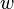
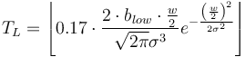

Please direct any questions or issues to this Image.sc Forum thread.
Thank you for your patience as we improve the website!
Ridge Detection
| Ridge (Line) Detection Plugin (Fiji) | |
|---|---|
| Author | Thorsten Wagner, Mark Hiner |
| Maintainer | Unmaintained |
| File | Ridge_Detect.jar [1] |
| Source | Github [2] |
| Latest version | v1.4.0 (20 Aug 2017) |
| Development status | Unmaintained |
Contents
Purpose
This plugin implements and extends the ridge / line detection algorithm described in:
Steger, C., 1998. An unbiased detector of curvilinear structures. IEEE Transactions on Pattern Analysis and Machine Intelligence, 20(2), pp.113–125.
It works with stacks, is parallelized, has a preview mode and is able to resolve overlapping lines. It depends on the apache-commons-lang 3 library. For ImageJ, please copy it into plugins/jars.
Examples
This example shows the application of the plugin on images of carbon nanotubes (Sigma = 1.5, Lower Threshold = 1.3, Higher Threshold = 7).
Parameter Selection
There are three parameters which have to be specified. These are the mandatory parameters. The optional parameters can be used to estimate the mandatory parameters
Mandatory Parameters
Sigma: Determines the sigma for the derivatives. It depends on the line width.
Lower Threshold: Line points with a response smaller as this threshold are rejected
Upper Threshold: Line points with a response larger as this threshold are accepted.
Darkline: (true/false) This parameter determines whether dark or bright lines are extracted.
Optional parameters
The following optional parameters are used to estimate the mandatory parameters:
Line width (): The line diameter in pixels. It estimates the mandatory parameter 'Sigma' by:

High contrast ( ): Highest grayscale value of the line. It estimates the mandatory parameter 'Upper threshold' by:
): Highest grayscale value of the line. It estimates the mandatory parameter 'Upper threshold' by:

Low contrast ( ): Lowest grayscale value of the line. It estimates the mandatory parameter 'Lower Threshold' by:
): Lowest grayscale value of the line. It estimates the mandatory parameter 'Lower Threshold' by:

Further options (true/false)

Correct position: Correct the line position if it has different contrast on each side of it.
Estimate width: If this option is selected the width of the line is estimated.
Show junction points: If this option is selected the junctions points will be displayed.
Show IDs: The ID of each line will be shown.
Verbose mode: If this option is selected, status information will be printed to the log while running.
Display results: If this option is selected, all contours and junctions are filled into a results table.
Add to Manager: All lines and junctions points will be added to the roi manager.
Overlap resolution
You can select a method to attempt automatic overlap resolution. The accuracy of this method will depend on the structure of your data.
Method: NONE
The default behavior: no assumption of overlap is made. Any point of potential intersection will be treated as an end point for the ridges involved.
Method: SLOPE
This method makes the assumption that when two ridges overlap, it is more likely that they will continue on their path than make turns. This is best suited to datasets with brief periods of overlap! If two ridges have a significant portion of overlap, the accuracy of this method will rapidly diminish.
If you use this method of overlap resolution, it is recommended that you first tune the Ridge Detection parameters with Preview enabled to get a minimal starting set of junction points - so that each ridge matches reality as best as possible. For example:

This detection with a sigma of 1.6 produces a set of lines and junctions not suited to slope-based overlap detection.

The same image with a sigma of 3.0. These are "real" junction points that will allow reasonable overlap detection via line slope.

In this image we see poor overlap detection. In this case due to a superfluous junction point at the bottom of one arm, leading to a misdiagnosis of what lines are overlapping.

Successful ridge detection with slope-based overlap detection enabled. Line 134 is selected to illustrate the selection of a complete line despite numerous intersections.
Installation
Simply turn on the Biomedgroup update site, which includes the ridge detection plugin.
If you use ImageJ just copy the RidgeDetection.jar file in your plugins folder and copy the apache-commons-lang 3 jar file into the plugins/jars folder.
Who used this plugin?
This is a list of publications where the plugin was used:
Glaser, M., Schnauß, J., Tschirner, T., Schmidt, S., Moebius-Winkler, M., Käs, J. A., & Smith, D. M. (2016). Self-assembly of hierarchically ordered structures in DNA nanotube systems. New Journal of Physics New J. Phys., 18(5), 055001. doi:10.1088/1367-2630/18/5/055001
How to cite
We think the best way is to cite the formal method and the used implementation:
Method:
Steger, C., 1998. An unbiased detector of curvilinear structures. IEEE Transactions on Pattern Analysis and Machine Intelligence, 20(2), pp.113–125.
Implementation: